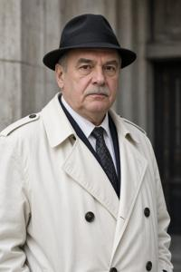

Эрвин Жладов - ЧЕРНОВИК


Эрвин Михалов Жладов (згур. Ervin Mixalov Zsladov, дегл. Ervin Mixalov Žladov, глаг. ⰅⰓⰂⰊⰐ ⰏⰊⰢⰀⰎⰑⰂ ⰆⰎⰀⰄⰑⰂ; 1931-1999) - верхнепаннонский политик, последний президент Республики Верхняя Паннония перед её распадом и гражданской войной.
Начало карьеры
Эрвин родился в згурской рабочей семье в Новокопах в 1931 году. Его школьные годы частично пришлись на период венгерской оккупации (1940-1944). По официальной биографии, Жладов "участвовал в Сопротивлении", но если верить официальным биографиям, в Сопротвилении участвовало практически всё население страны. Во всяком случае, он приветствовал освобождение Паннонии Красной Армией и вскоре вступил в Лигу молодых борцов (ЛМБ) - молодёжное крыло Коммунистической партии Верхней Паннонии (КПВП). Во время службы в армии (1949-1951) Жладов проявил себя как активист ЛМБ, был замечен партийным руководством, после демобилизации принят в КПВП и взят на постоянную партийную работу. Он оказался способным, исполнительным и добросовестным чиновником, готовым без лишних вопросов выполнить любое поручение начальства. Это помогло его карьере; в 1957 году Жладова перевели в столицу и приняли в Управление Городского комитета КПВП по организации массовых мероприятий. Там отвечал за подбор актёров массовки для уличных пропагандистких представлений с сотнями участников. В ноябре 1964 году, в ходе празднования двадцадитетнего юбилея освобождения Паннонии, он сумел угодить самому Высшему Вождю, президенту Северину Гоубке, выставив перед его трибуной молодых красавиц-гимнасток. Гоубка, большой ценитель женской красоты, отметил качество кадровой работы, и Жладов был принят с повышением в Шестое управление аппарата Президента - как раз по этому профилю.
Amt Sechs
Официально Шестое управление занималось "набором временного персонала для выполнения отдельных задач обеспечения потребностей государственных органов". Фактически оно поставляло эпизодических любовниц для Гоубки из числа активисток ЛМБ, девушек-военнослужащих НОР, спортсменок и т.д. - несколько десятков ежегодно. Большинство чиновников знало, какие именно потребности каких конкретно органов обеспечивает это подразделение, и с намёком называли его не иначе как по-немецки: Amt Sechs. Вербовщики Шестого управления, одним из которых вначале служил и Жладов, навещали воинские части и спортивные клубы, где хранились личные дела с физическими параметрами, просматривали эти дела, отбирали подходящих девушек, вызывали их на секретные беседы и говорили примерно следующее: "Товарищ Гоубка, при всех его сверхчеловеческих талантах, всё-таки мужчина из плоти и крови. Без устали отдавая все свои силы, не щадя себя в служении народу и партии, он всё же иногда нуждается в простом человеческом отдыхе. Не желаете ли вы, товарищ, на строго добровольной основе принять участие в мероприятиях по обеспечению досуга Высшего Вождя?"
Много лет спустя, уже после падения коммунистического режима, Жладов в интервью на вопрос, применялось ли принуждение, только рассмеялся. По его словам, почти все с радостью соглашались, а немногих отказавшихся никак не наказывали. Согласившихся девушек посылали в общежитие в Зелёном Дворе, загородной резиденции Гоубки, и после завершения "мероприятий" премировали дефицитными товарами. Это официально оформлялось как служебная командировка "в распоряжение (rozporjud) аппарата Президента", отсюда название таких девушек на бюрократическом жаргоне - "распоряженки" (rozporjuzsi).
Эрвин Жладов на этой деликатной службе проявил всё ту же исполнительность, талант к подбору кадров и необходимое отсутствие щепетильности. В 1968 году разразился скандал: одна из "распоряженок" пожаловалась Гоубке, что руководство Amt Sechs злоуптребляет служебным положением и вовсю пользуется тем, что причитается одному Высшему Вождю. Разгневанный Гоубка поувольнял и отправил в лагеря всю верхушку управления, а Жладова, который работал честно и положением не злоупотреблял, назначил новым главой. Так Эрвин Жладов получил служебный кабинет в Зелёном Дворе и попал в высший круг приближённых вождя, пусть и в сомнительном и неуважаемом статусе. На этом рискованном, полном соблазнов посту он добросовестно прослужил десять лет. Никто из его предшественников не задерживался больше двух.
В парламенте
Гоубка старел, и потребности органов закономерно снижались. В марте 1978 года - по странному совпадению, за несколько дней до самоубийства его сына Бориса - президент указом упразднил Шестое управление и назначил Жладова заместителем председателя Законодательного Собрания, парламента страны. Этот крутой карьерный взлёт многих удивил и заставил строить самые невероятные теории. В курилках аппарата Президента и Законодательного Собрания шептались, будто Жладов нашёл для Гоубки "распоряженку" с какими-то сверхъестественными способностями, которая якобы вернула Вождю молодость и чуть не довела до инфаркта. Верно это или нет, у странного назначения могли быть и другие причины. Бессменным председателем Законодательного Собрания уже много лет была Миляна Гоубка, жена Высшего Вождя. Она знала о Шестом управлении, терпела его, но, конечно, такой заместитель не мог быть ей приятен. Назначение Жладова было явным унижением Миляны и, вероятно, отражало беспокойство Гоубки перед её растущим авторитетом и влиянием.
Жладов как заместитель председателя парламента занимался чисто техническими вопросами. Никакого политического влияния эта должность не давала, да и сам парламент был полиически бессилен и мог лишь единогласно прнимать законы, написанные в центрах реальной власти, то есть в ЦК партии, аппарате Президента и Министерстве народной безопасности (НОН). Все понимали эти правила игры. Но однажды игра закончилась.
Во главе государства
10 ноября 1989 года, на фоне растущего экономического кризиса, массового недовольства и краха социалистических режимов в соседних странах, Гоубка скоропостижно скончался - по легенде, через несколько часов после того, как ему доложили о падении Берлинской стены. Новость о его смерти скрывалась три дня. Вдова Миляна и её родственники бежали в Ливию. Так Эрвин Жладов, к полному своему изумлению, автоматически стал председателям Законодательного Собрания, а согласно Конституции 1979 года, в отсутствие президента - временно исполняющим его обязанности.
Жладов никогда не отличался ни волей, ни инициативностью, ни гибкостью ума - ничем из качеств, необходимых главе государства, особенно в период тяжелейшего кризиса. В бурные месяцы после смерти Гоубки он просто поплыл по течению, формально исполняя свои служебные обязанности и избегая самостоятельных решений. Это вполне устраивало паннонскую политическую элиту, которой совершенно не хотелось получить нового Гоубку. В условиях краха авторитета КПВП парламент оказался единственной легитимной властью. Следуя веяниям времени, он принял серию радикальных решений, нацеленных исключительно на то, чтобы успокоить протестную улицу: отмена цензуры, многопартийность, разрешение частного предпринимательства, сокращение армии, назначение премьером Вацлава Блухи с мандатом на решительные рыночные реформы. Под всеми этими революционными декретами стояла подпись Жладова, но фактически его инициатива была минимальна: как и раньше, он делал лишь то, что от него ожидали.
И в частных, и в публичных разговорах Жладов признавал, что ждёт не дождётся президентских выборов, которые позволят ему уйти на покой. Но никто не собирался позволить ему это сделать; его слабость слишком многих устраивала. В январе 1990 года Законодательное Собрание продлило его президентские полномочия вплоть до выборов, которые должны были состояться уже по новой конституции. Новую конституцию ещё только предстояло принять следующему составу Законодательного Собрания. Этот состав был избран в сентябре 1990, оказался расколот на непримиримые националистические фракции и неспособен договориться даже о новом правительстве, не говоря о новой конституции. Кризис усугублялся, и страна полным ходом шла к гражданской войне между двумя этническими общинами. Жладов оставался президентом, совершенно растерянным и бессильным повлиять на ситуацию.
В июне 1991 года он, наконец, решился хоть что-то предпринять и, воспользовавшись не очень ясным конституционным положением, издал указ о роспуске недееспособного парламента. Впервые за много месяцев парламент объединился, чтобы признать указ незаконным и потребовать отставки президента. Жладов воспринял это, вероятно, с огромным облегчением. 28 июня он объявил о своей отставке, признав, что центральная власть в стране фактически перестала существовать. Он предоставил парламенту выбрать нового президента или назначить выборы. Этого парламент сделать уже не смог. Жладов уехал на свою дачу, где и прожил оставшиеся годы, ухаживая за садом и никак не участвуя в гражданской войне и других бурных событиях тех лет. Его дачный посёлок, расположенный в глубине згурской зоны, не был затронут боевыми действиями. Всеми забытый бывший президент умер в 1999 году.
Семья
Жладов женился в 1964 году, что было требованием для службы в Шестом управлении: холостяков туда не брали. Его брак имел тот же неприличный оттенок, что и вся служба: руководство Amt Sechs предложило или навязало в жёны новому сотруднику одну из "распоряженок", случайно забеременевшую от Гоубки. Мальчик по имени Сандор, родившийся в 1965 году, официально считался сыном Жладова, но реальное происхождение мало для кого было секретом. Гоубка не интересовался сыном и не принимал никакого участия в судьбе. Сандор Жладов учился в Институте социалистической экономики, был учеником Вацлава Блухи и сторонником его рыночных реформ, в 1990-е годы участвовал в гражданской войне на згурской стороне, а после неё круто сменил политические убеждения, вступил в Згурскую социалистическую партию (ЗСП) и публично объявил себя сыном Гоубки. В настоящее время "сын двух президентов" Сандор Гоубка-Жладов политически активен, является депутатом Згурского Законодательного Собрания от ЗСП, ярым сторонником восстановления социализма и реабилитации Гоубки, и неоднократно баллотировался в мэры Вроновицы, впрочем, безуспешно.
Категории: Черновики, Персоналии, Политики, Постсоциалистическая эпоха, Социалистическая эпоха